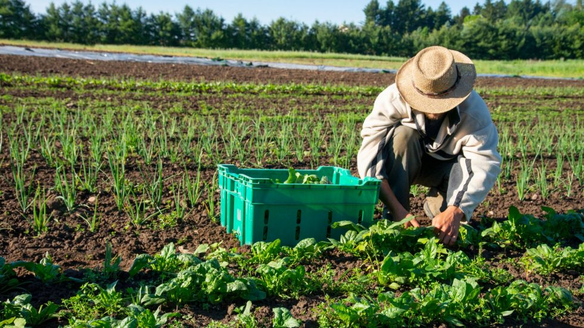
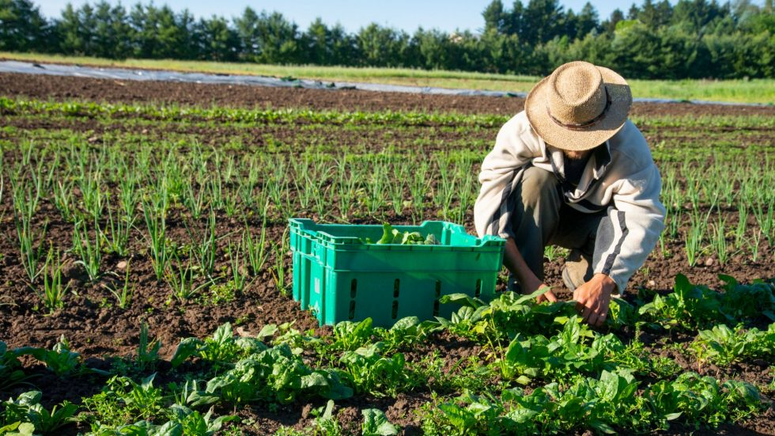

Sobre Nós
Campo Tranquilo é um lugar de paz e serenidade, onde você pode se reconectar com a natureza. O sonho de uma vida mais tranquila e próxima a natureza é muito atraente para muitas pessoas. Por meses escutei e li histórias de pessoas que fizeram esse trajeto e percebi que as pessoas mudaram pelos mais diversos motivos, mas todas perseguiram um sonho que acreditavam que morar em um sítio seria a solução. Mudar de vida, mudar sua forma de gerar renda, mudar a forma de se relacionar com seus vizinhos… tudo isso muda quando você se muda para a zona rural. O direito de sonhar é uma noção ampla e subjetiva que se refere à liberdade de imaginar, criar e almejar objetivos, sem qualquer tipo de limitação ou impedimento. Este direito é fundamental para a realização pessoal e para o desenvolvimento de uma sociedade livre e justa. No entanto, esse direito não é absoluto e precisa ser equilibrado com outros direitos e valores importantes, como o direito ao meio ambiente equilibrado. Isso significa que, em algumas situações, o direito de sonhar pode ser limitado em nome da proteção do meio ambiente.
Galeria
.png) 
